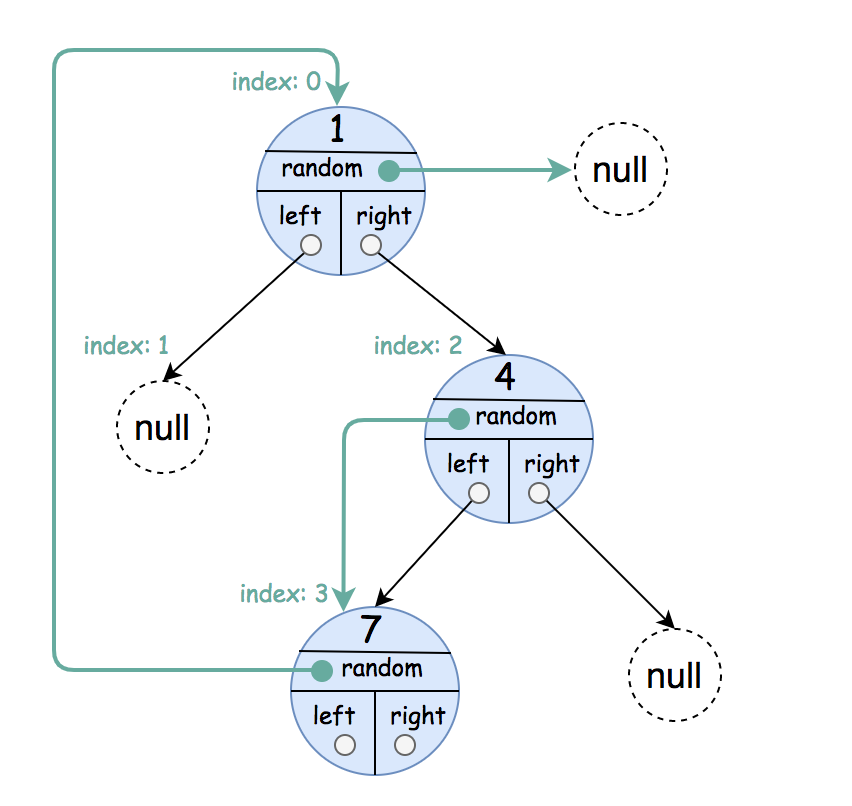

LC 133 138 1485 1490 - Deep Copy
Table of Contents
133. Clone Graph
Link: Clone Graph
Problem Description
Given a reference of a node in a connected undirected graph, return a deep copy (clone) of the graph. Each node in the graph contains a val (int) and a list (List[Node]) of its neighbors.
Example:

Input:
{"$id":"1","neighbors":[{"$id":"2","neighbors":[{"$ref":"1"},{"$id":"3","neighbors":[{"$ref":"2"},{"$id":"4","neighbors":[{"$ref":"3"},{"$ref":"1"}],"val":4}],"val":3}],"val":2},{"$ref":"4"}],"val":1}
Explanation:
Node 1's value is 1, and it has two neighbors: Node 2 and 4.
Node 2's value is 2, and it has two neighbors: Node 1 and 3.
Node 3's value is 3, and it has two neighbors: Node 2 and 4.
Node 4's value is 4, and it has two neighbors: Node 1 and 3.
Note:
- The number of nodes will be between 1 and 100.
- The undirected graph is a simple graph, which means no repeated edges and no self-loops in the graph.
- Since the graph is undirected, if node p has node q as neighbor, then node q must have node p as neighbor too.
- You must return the copy of the given node as a reference to the cloned graph.
Method & Code
The idea behind this is the traverse of graph. Therefore, implement DFS or BFS on graph will suffice.
DFS
/**
* DFS to access all nodes in graph.
*
* @param node start node of original graph
* @return start node of cloned graph
*/
public Node cloneGraph(Node node) {
HashMap<Integer, Node> map = new HashMap<>();
return dfs(node, map);
}
/**
* DFS to traverse every node in graph and create a new node to save neighbors.
*
* @param node start node of original graph
* @param map map to store previous visited nodes
* @return start node of original graph
*/
private Node dfs(Node node, HashMap<Integer, Node> map) {
/* Corner case */
if (node == null) {
return null;
}
if (map.containsKey(node.val)) {
return map.get(node.val);
} else {
Node newNode = new Node(node.val, new ArrayList<>());
map.put(node.val, newNode);
for (Node n : node.neighbors) { // iter all elements in array
newNode.neighbors.add(dfs(n, map)); // DFS
}
return newNode;
}
}
BFS
private Map<Node, Node> oldNewMap = new HashMap<>(); // hash map for BFS
/**
* BFS searching with hash map.
*
* @param node root node of original graph
* @return root node of cloned graph
*/
public Node cloneGraphBFS(Node node) {
/* Corner case and end point */
if (node == null) {
return null;
}
if (oldNewMap.containsKey(node)) {
return oldNewMap.get(node);
}
Node cloned = new Node(node.val, new ArrayList<>());
oldNewMap.put(node, cloned);
for (Node n : node.neighbors) {
cloned.neighbors.add(cloneGraphBFS(n)); // add all connected nodes into neighbor
}
return cloned;
}
138. Copy List with Random Pointer
Link: Copy List with Random Pointer
Problem Description
A linked list is given such that each node contains an additional random pointer which could point to any node in the list or null.
Return a deep copy of the list.
Example 1:

Input:
{"$id":"1","next":{"$id":"2","next":null,"random":{"$ref":"2"},"val":2},"random":{"$ref":"2"},"val":1}
Explanation:
Node 1's value is 1, both of its next and random pointer points to Node 2.
Node 2's value is 2, its next pointer points to null and its random pointer points to itself.
Note:
- You must return the copy of the given head as a reference to the cloned list.
Method & Code
Traverse list for 3 times.
- First time, duplicate node to original node’s next.
- Second time, set the new node’s random pointer.
- Finally, detach the original list and copied list, and return copied list.
/**
* Traverse list for 3 times.
* First time, duplicate node to original node's next.
* Second time, set the new node's random pointer.
* Finally, detach the original list and copied list, and return copied list.
*
* @param head head of original list
* @return deep copy of the list
*/
public Node copyRandomList(Node head) {
Node h = head, next;
while (h != null) { // first traverse: duplicate original nodes
next = h.next;
h.next = new Node();
h.next.val = h.val;
h.next.next = next;
h = next;
}
h = head;
while (h != null) { // second traverse: set duplicated node's random pointer
if (h.random != null) {
h.next.random = h.random.next;
}
h = h.next.next;
}
h = head;
Node dummy = new Node();
Node current = dummy, tmp;
while (h != null) {
next = h.next.next; // next node in original list
tmp = h.next; // next node in copied list
current.next = tmp;
current = tmp;
head.next = next;
h = next;
}
return dummy.next;
}
1485. Clone Binary Tree With Random Pointer
Link: Clone Binary Tree With Random Pointer
Problem Description
A binary tree is given such that each node contains an additional random pointer which could point to any node in the tree or null.
Return a deep copy of the tree.
The tree is represented in the same input/output way as normal binary trees where each node is represented as a pair of [val, random_index] where:
val: an integer representingNode.valrandom_index: the index of the node (in the input) where the random pointer points to, ornullif it does not point to any node.
You will be given the tree in class Node and you should return the cloned tree in class NodeCopy. NodeCopy class is just a clone of Node class with the same attributes and constructors.
Example 1:

Input: root = [[1,null],null,[4,3],[7,0]]
Output: [[1,null],null,[4,3],[7,0]]
Explanation: The original binary tree is [1,null,4,7].
The random pointer of node one is null, so it is represented as [1, null].
The random pointer of node 4 is node 7, so it is represented as [4, 3] where 3 is the index of node 7 in the array representing the tree.
The random pointer of node 7 is node 1, so it is represented as [7, 0] where 0 is the index of node 1 in the array representing the tree.
Example 2:

Input: root = [[1,4],null,[1,0],null,[1,5],[1,5]]
Output: [[1,4],null,[1,0],null,[1,5],[1,5]]
Explanation: The random pointer of a node can be the node itself.
Example 3:

Input: root = [[1,6],[2,5],[3,4],[4,3],[5,2],[6,1],[7,0]]
Output: [[1,6],[2,5],[3,4],[4,3],[5,2],[6,1],[7,0]]
Example 4:
Input: root = []
Output: []
Example 5:
Input: root = [[1,null],null,[2,null],null,[1,null]]
Output: [[1,null],null,[2,null],null,[1,null]]
Constraints:
- The number of nodes in the
treeis in the range[0, 1000]. - Each node’s value is between
[1, 10^6].
Method & Code
One-pass DFS to traverse the tree, and add random node to new created node when DFS completed.
Note that the random node may not be created when DFS completed. Therefore, to link the random node in newly created node, call DFS to check the node has been created or not. If not, continue using DFS to construct the new tree. Otherwise, simply return the new node.
Hence, DFS will be called 3 times, left child, right child, and random child.
/**
* One-pass DFS to traverse the tree, and add random node to new created node when DFS completed.
* Note that the random node may not be created when DFS completed.
* Therefore, to link the random node in newly created node, call DFS to check the node has been created or not.
* If not, continue using DFS to construct the new tree. Otherwise, simply return the new node.
* Hence, DFS will be called 3 times, left child, right child, and random child.
*
* @param root root of tree
* @return deep copy of the tree
*/
public NodeCopy copyRandomBinaryTree(Node root) {
HashMap<Node, NodeCopy> m = new HashMap<>();
return dfs(root, m);
}
/**
* DFS to traverse the tree.
*
* @param root current node
* @param m hash map mapping the old node and newly created node
* @return deep copy of the tree
*/
private NodeCopy dfs(Node root, HashMap<Node, NodeCopy> m) {
/* Corner case */
if (root == null) {
return null;
}
if (m.containsKey(root)) { // avoid duplicate
return m.get(root);
}
NodeCopy tmp = new NodeCopy(root.val);
m.put(root, tmp);
tmp.left = dfs(root.left, m);
tmp.right = dfs(root.right, m);
tmp.random = dfs(root.random, m); // random node may have not been created yet
return tmp;
}
1490. Clone N-ary Tree
Link: Clone N-ary Tree
Problem Description
Given a root of an N-ary tree, return a deep copy (clone) of the tree.
Each node in the n-ary tree contains a val (int) and a list (List[Node]) of its children.
class Node {
public int val;
public List<Node> children;
}
Nary-Tree input serialization is represented in their level order traversal, each group of children is separated by the null value (See examples).
Follow up: Can your solution work for the graph problem?
Example 1:

Input: root = [1,null,3,2,4,null,5,6]
Output: [1,null,3,2,4,null,5,6]
Example 2:

Input: root = [1,null,2,3,4,5,null,null,6,7,null,8,null,9,10,null,null,11,null,12,null,13,null,null,14]
Output: [1,null,2,3,4,5,null,null,6,7,null,8,null,9,10,null,null,11,null,12,null,13,null,null,14]
Constraints:
- The depth of the n-ary tree is less than or equal to
1000. - The total number of nodes is between
[0, 10^4].
Method & Code
DFS to iterate all the nodes. Create a new node at each DFS iteration and iterate into all the children of original node.
/**
* DFS to iterate all the nodes.
* Create a new node at each DFS iteration and iterate into all the children of original node.
* Finally add children list back to new created node.
*
* @param root root of tree
* @return deep copy (clone) of the tree
*/
public Node cloneTree(Node root) {
/* Corner case */
if (root == null) {
return null;
}
Node tmp = new Node(root.val);
List<Node> children = new LinkedList<>();
for (Node n : root.children) {
children.add(cloneTree(n));
}
tmp.children = children;
return tmp;
}